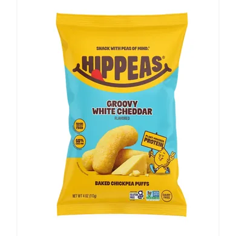
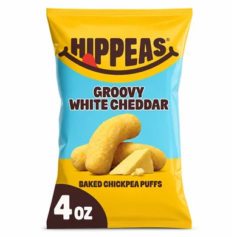
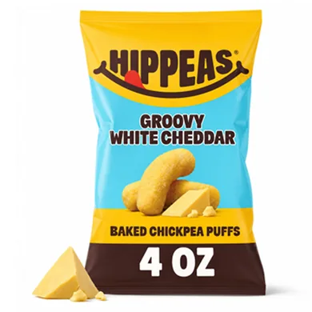
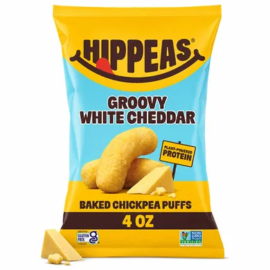
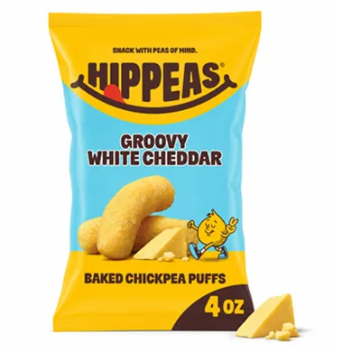
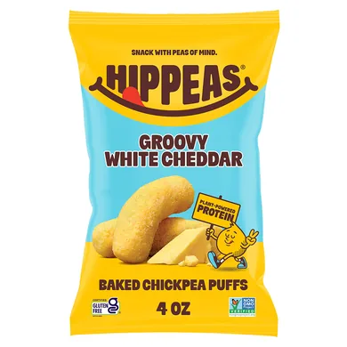

Hero image generation
The image that decides whether a shopper stops. Spark rebuilds it against the heroes that convert in your category — scale, framing, and thumbnail clarity.
Original

Generated Spark images




